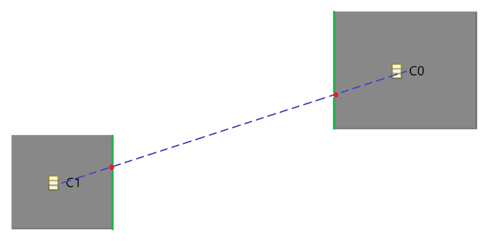
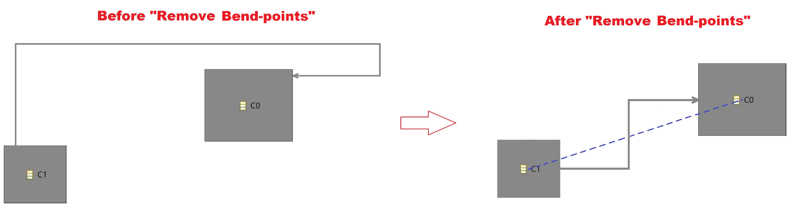
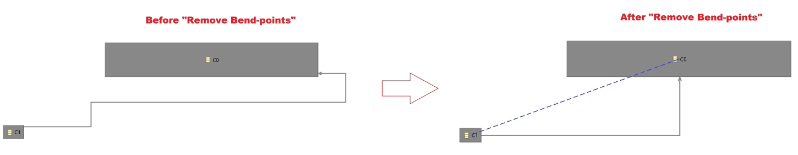

Summary: Remove bend-points on rectilinear edges on diagram.
| Version | Status | Date | Authors | Changes |
|---|---|---|---|---|
| v0.1 | DRAFT | 2017-06-12 | jmallet | Initial version. |
| v1.0 | PROPOSAL | 2017-06-14 | jmallet | Updated version. |
Relevant tickets:
The goal of this evolution is to authorize end user to remove bend-points on a rectilinear edge to simplify the edge. The routing of the edge after the execution of the action is detailed just below.
Currently, there is already an action to remove bend-points.
This action has been added with
bugzilla 443108.
It is only available on edges with a «Straight» routing style (see
documentation or
corresponding commit ).
There exist already a feature called «Closest Distance» in the appearance tab of properties view when edge is selected. This feature routes the edge by choosing the shortest distance.
However, the behavior of our action will not be the same as «Closest Distance», because this feature has only effect on DrawD2 (interpretation of GMF data to display edge) but not on GMF model. With experience, this is generally a bad idea.
To realize this action, the following algorithm is proposed :
1 – Compute starting (on source) and ending (on target) side according to the intersection between the source (and also the target) and the line from the center of the source and the center of the target.
2 – If the side are both horizontal or vertical, the resulting edge will have 3 segments. The second segment is localized on the middle of the first point and the last point of the edge.
3 – If the side are not both horizontal or vertical, the resulting edge will have 2 segments.
4 – If edge relies border nodes, the resulting edge will follow the two previous rules. Sometimes the resulting edge will cross over its container, there is no avoidance process when the new edge is computing.
There is no change in metamodel for this evolution.
«Remove Bend-points» action in the contextual menu when user click on a rectililinear edge will be enabled.
Updates:
All cases described for rectilinear edge must be tested, i.e. one test where side are both horizontal or vertical, an other where side are not both horizontal or vertical and a last one using border node.